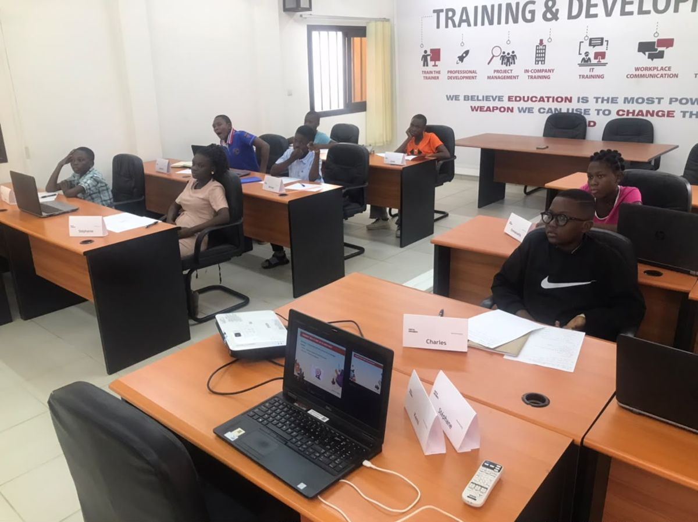
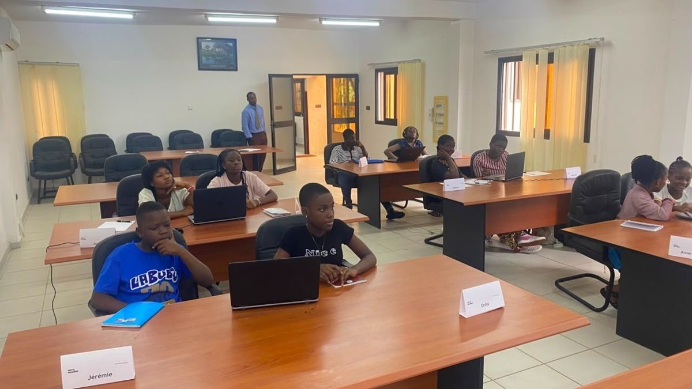

Digital Dreamers est le programme gratuit d'initiation au numérique de BostonSolux Academy pour les 10–13 ans : code, intelligence artificielle, création de jeux et cybersécurité, pendant les vacances de juillet.
Un programme développé par BostonSolux Academy pour inspirer et former la prochaine génération dans les domaines de la technologie et du numérique, avec des compétences pratiques dès le plus jeune âge.
Entièrement gratuitLa participation ne coûte rien aux familles. Les places sont limitées.
Encadré par des formateurs spécialisésL'équipe de BostonSolux Academy, cabinet de formation et de conseil en informatique.
Dans un vrai centre de formationLes enfants travaillent sur ordinateur au BostonSolux Training Center, Route Nationale N°2, à Kpogan.
Un parcours sur plusieurs annéesDepuis 2025, une promotion « Année 1 » accueille les débutants et une promotion « Année 2 » ceux qui reviennent.
Explorer, créer, réussir
Le programme de l'édition 2026, de la première ligne de code au projet présenté en fin de session.
Initiation au développement
Algorithmes, conditions, variables : d'abord avec Scratch, puis avec Python.
Intelligence artificielle
Comprendre à quoi sert l'IA, des voitures autonomes aux robots livreurs et à la médecine.
Création de jeux
Imaginer, programmer et jouer à ses premiers jeux numériques.
Internet et cybersécurité
Les bons réflexes face au cyberharcèlement, à la fraude en ligne et aux contenus inappropriés.
Projet final innovant
Chaque participant réalise un projet et le présente à la fin du programme.
Outils utilisésScratchPythonTkinter, en année 2
Déjà trois éditions
Chaque mois de juillet depuis 2024, au BostonSolux Training Center de Kpogan.

Premier jour, 20 juillet 2026

La rencontre avec un leader du numérique
3ᵉ édition
Du 20 au 31 juillet 2026
Au programme : développement, intelligence artificielle, création de jeux, internet et cybersécurité, projet final.
Rencontre avec M. Hyacinthe Aziagbedo, directeur des systèmes d'information de la BSIC, plus de 23 ans d'expérience : 40 minutes de questions, de démonstrations et d'échanges sur les métiers du numérique.
Ce que disent ceux qui encadrent et rencontrent les Digital Dreamers.
Les enfants ont également appris à utiliser Scratch et à comprendre des concepts essentiels.
CM
Cassandra Mbella-JohnsonConsultante en stratégie · L'émissaire, juillet 2024
Ils nous ont surpris par leur rapidité d'apprentissage.
GH
Germain HunsinouAccount executive · L'émissaire, juillet 2024
Les Digital Dreamers à l'écoute d'un leader du numérique
M. Hyacinthe Aziagbedo, DSI de la BSIC, a partagé plus de 23 ans d'expérience des systèmes d'information avec les enfants : métiers du numérique, cybersécurité, intelligence artificielle.
L'idée à retenir : apprendre à comprendre avant d'apprendre à utiliser.
Rien : la participation est entièrement gratuite. Les places sont limitées.
Pour quel âge ?
Pour les enfants de 10 à 13 ans.
Mon enfant n'a jamais programmé, est-ce un problème ?
Non. Digital Dreamers est une initiation. En 2025, la promotion « Année 1 » accueillait les débutants, et la promotion « Année 2 » ceux qui avaient déjà participé.
Où et quand ?
Au BostonSolux Training Center, Route Nationale N°2, à Kpogan. Les trois premières éditions se sont tenues en juillet ; les dates de la prochaine seront annoncées sur cette page.
Qui encadre les enfants ?
Une équipe de formateurs spécialisés de BostonSolux Academy, cabinet de formation et de conseil en informatique.
Comment inscrire mon enfant ?
Remplissez la pré-inscription en ligne ou appelez le +228 91 06 18 73. L'équipe vous recontacte à l'ouverture des inscriptions.
Pré-inscrivez votre enfant pour la prochaine édition
Les dates seront annoncées ici. En attendant, la pré-inscription prend quelques minutes et permet à l'équipe de vous recontacter.